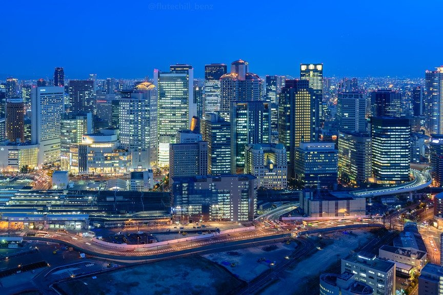

Japan's economy
명목 GDP로 환산했을시 일본은 세계 3위의 경제 대국으로 경제규모로는 미국과 중국 다음가는 경제력을 지니고 있다.
자국의 강력한 기술력을 기반으로 여러 산업 분야에서 손꼽히는 선진적인 경쟁력을 갖췄고 제조업 수출로 유지되는 PPP 기준 세계 4위의 무역규모, 30년 연속 대외순자산 세계 1위를 자랑하며 상당한 구매력을 지닌 1억 2천만의 거대한 내수 시장을 바탕으로 경제 대국으로서의 지위를 유지하고 있다. 전후 일본은 세계 1위의 경제성장률을 유지하며 빠르게 경제 성장을 하였고 2010년 중국에게 추월당하기 전까지 미국 다음가는 경제 대국이었다. 2018년에도 일본의 GDP는 남아메리카 전체보다 1조 달러 많고 아프리카 대륙 전체의 2배에 달한다.
또한 평균근로소득과 환율까지 계산한 PPP의 경우 2020년 기준 아시아에서 가장 높은 수치를 기록하고 있다.그러나 1980년대에 최전성기를 누렸던 일본도 버블 붕괴 이후 위기가 찾아왔다. 때문에 긴 장기 불황이 지속되는 상황에서 실시한 일명 '고이즈미 개혁'이라 불리는 고이즈미 준이치로의 강력한 신자유주의 개혁은 일본을 큰 내수 시장을 기반으로 한 서비스업 중심 국가로 개조한다. 특히 금융업의 경우는 그런 뼈를 깎는 노력이 빛을 발한 분야로 2000년대 이후 괄목할만한 변화를 이루어냈다. 90년대의 버블 붕괴로 인한 위기를 극복하기 위한 대대적인 개혁과 합병을 통해 재정 건전성이 세계에서도 높은 수준으로 재탄생했고 모건스탠리를 잡아먹고 있는 미쓰비시 UFJ 은행 같이 증권업계의 신흥강자로 모습을 드러내는 경우도 있다.
더군다나 서브프라임 모기지 사태 이후, 다른 선진국들의 자산시장이 폭락하고 이 국가들에서 강력한 경기부양책이 지속되는 상황에서 일본 경제는 그래도 연착륙에 성공한 것이 아니냐는 재평가도 나왔다. 물론 이는 세계가 다같이 시궁창으로 말려들어가는 상황에서 그나마 선방했다는 이야기다. 버블 붕괴 이후에도 엔화의 위상은 크게 흔들리지 않았으며 1997년까지는 저성장이었을지언정 선진국 수준의 경제성장률은 이루어 냈다. 1997년 이후부터 제로성장이 시작되면서 현재 엔화 환산 GDP는 1997년 이후보다 미세하게 높은 정도로 심각한 정체 상황. 하지만 이때만 하더라도 사회 분위기는 그렇게 나쁘지 않았다.
오히려 일본 사회에 본격적으로 어두운 그림자가 깔리고 위기의식이 도래한 것은 1990년 버블 붕괴가 아닌 90년대 후반, 밀레니엄을 맞이하면서 시작되었다. 설비 투자가 대폭 감소하면서 일본 제조업이 쇠락하고 잘 나가는 일본의 수출대기업들은 해외 현지화로 국내 생산물량을 대폭 줄이는 등 제조업 공동화를 심화시켰다. 그리고 이 과정에서 기존에 고용했던 직원들을 잘라내거나 비용절감을 하기 위해 블랙기업의 개념이 탄생하고 비정규직이 증가하는 큰 사회 문제가 된다. 아베 신조 총리가 2012년 집권하면서 시작된 아베노믹스로 일본의 경제는 분명히 꾸준하고 완만한 회복세에 있지만 임금 수준이 정체되어 있는 것처럼 디플레이션의 잔흔은 아직까지 생생히 남아있다. 또한 정부에서 경기를 부양하려고 마이너스 금리를 책정했음에도 불구하고 일본 사회 전반에 깔린 절약 문화, 즉 여전히 투자를 꺼리는 일본 기업들과 불안한 노후를 걱정하는 일본인들이 시중에 돈을 풀지 않으면서 경기부양의 확실한 마중물 역할을 하지 못하는 상황이다. 다만 취업시장은 상당히 양호한 편이다. 코로나 이전까지 유효구인배율 1.6을 기록했으며 코로나로 직격탄을 맞은 2020년 후반기에도 대학생들의 취업 내정률이 70%에 육박할정도.